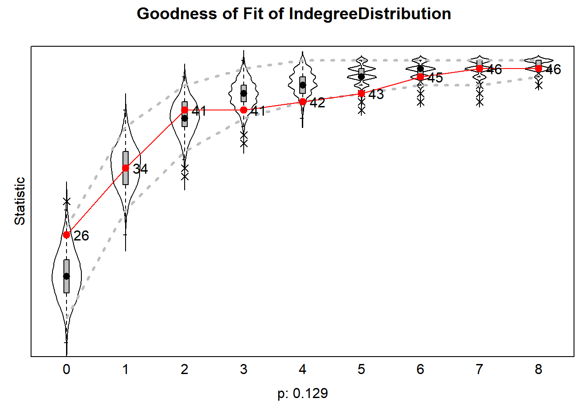
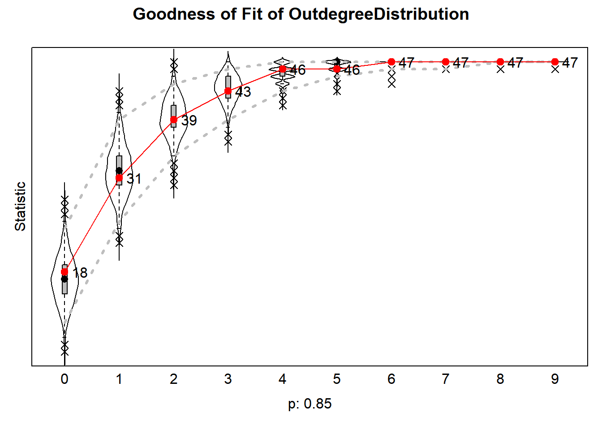
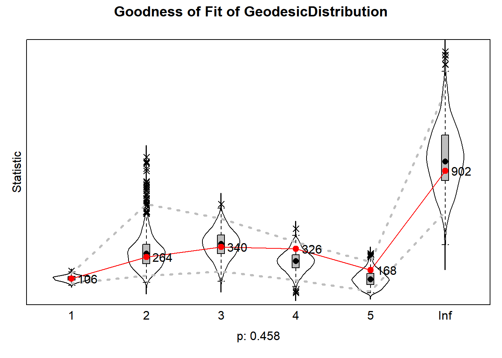
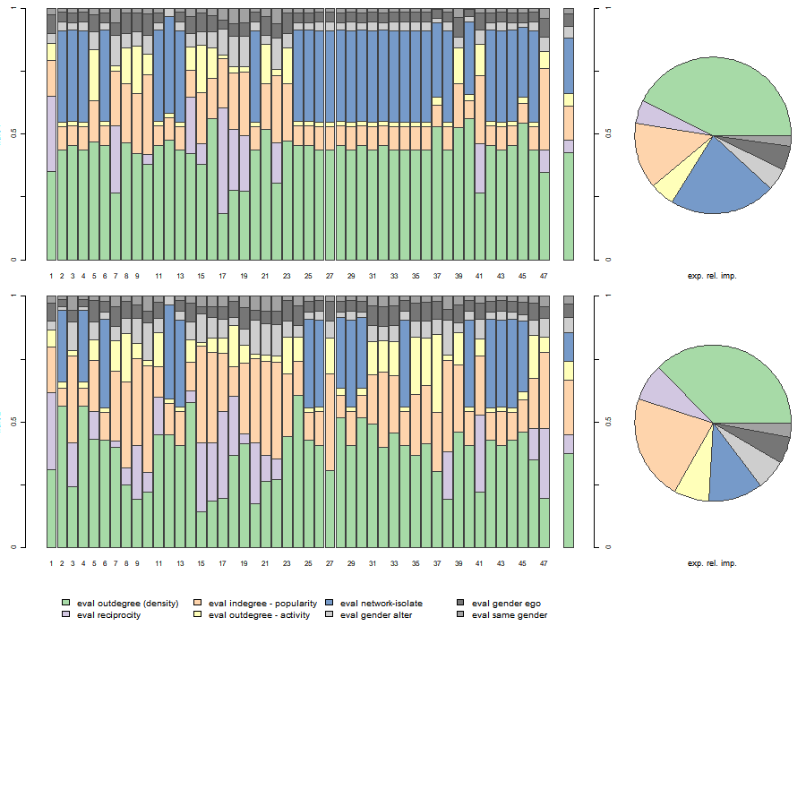

Start with clean workspace
rm(list = ls())We have two goals:
fpackage.check: Check if packages are installed (and install if not) in R (source).fsave: Save to processed data in repositoryf_pubnets: select scholars and construct directed publication network.fpackage.check <- function(packages) {
lapply(packages, FUN = function(x) {
if (!require(x, character.only = TRUE)) {
install.packages(x, dependencies = TRUE)
library(x, character.only = TRUE)
}
})
}
fsave <- function(x, file = NULL, location = "./data/processed/") {
ifelse(!dir.exists("data"), dir.create("data"), FALSE)
ifelse(!dir.exists("data/processed"), dir.create("data/processed"), FALSE)
if (is.null(file))
file = deparse(substitute(x))
datename <- substr(gsub("[:-]", "", Sys.time()), 1, 8)
totalname <- paste(location, datename, file, ".rda", sep = "")
save(x, file = totalname) #need to fix if file is reloaded as input name, not as x.
}
fload <- function(filename) {
load(filename)
get(ls()[ls() != "filename"])
}
fshowdf <- function(x, ...) {
knitr::kable(x, digits = 2, "html", ...) %>%
kableExtra::kable_styling(bootstrap_options = c("striped", "hover")) %>%
kableExtra::scroll_box(width = "100%", height = "300px")
}
# this is the most important one. We created it in the previous script
f_pubnets <- function(df_scholars = df, list_publications = publications, discip = "sociology", affiliation = "RU",
waves = list(wave1 = c(2018, 2019, 2020), wave2 = c(2021, 2022, 2023))) {
publications <- list_publications %>%
bind_rows() %>%
distinct(title, .keep_all = TRUE)
df_scholars %>%
filter(affil1 == affiliation | affil2 == affiliation) %>%
filter(discipline == discip) -> df_sel
networklist <- list()
for (wave in 1:length(waves)) {
networklist[[wave]] <- matrix(0, nrow = nrow(df_sel), ncol = nrow(df_sel))
}
publicationlist <- list()
for (wave in 1:length(waves)) {
publicationlist[[wave]] <- publications %>%
filter(gs_id %in% df_sel$gs_id) %>%
filter(year %in% waves[[wave]]) %>%
select(author) %>%
lapply(str_split, pattern = ",")
}
publicationlist2 <- list()
for (wave in 1:length(waves)) {
publicationlist2[[wave]] <- publicationlist[[wave]]$author %>%
# lowercase
lapply(tolower) %>%
# Removing diacritics
lapply(stri_trans_general, id = "latin-ascii") %>%
# only last name
lapply(word, start = -1, sep = " ") %>%
# only last last name
lapply(word, start = -1, sep = "-")
}
for (wave in 1:length(waves)) {
# let us remove all publications with only one author
remove <- which(sapply(publicationlist2[[wave]], FUN = function(x) length(x) == 1) == TRUE)
publicationlist2[[wave]] <- publicationlist2[[wave]][-remove]
}
for (wave in 1:length(waves)) {
pubs <- publicationlist2[[wave]]
for (ego in 1:nrow(df_sel)) {
# which ego?
lastname_ego <- df_sel$lastname[ego]
# for all publications
for (pub in 1:length(pubs)) {
# only continue if ego is author of pub
if (lastname_ego %in% pubs[[pub]]) {
aut_pot <- which.max(pubs[[pub]] %in% lastname_ego)
# only continue if ego is first author of pub
if (aut_pot == 1) {
# check all alters/co-authors
for (alter in 1:nrow(df_sel)) {
# which alter
lastname_alter <- df_sel$lastname[alter]
if (lastname_alter %in% pubs[[pub]]) {
networklist[[wave]][ego, alter] <- networklist[[wave]][ego, alter] + 1
}
}
}
}
}
}
}
return(list(df = df_sel, network = networklist))
}RSiena: what do you think? :-)packages = c("RSiena", "tidyverse", "stringdist", "stringi")
fpackage.check(packages)df <- fload("./data/processed/20230621df_complete.rda")
publications <- fload("./data/processed/20230621list_publications_jt.rda")output <- f_pubnets()
df_soc <- output[[1]]
df_network <- output[[2]]# let us check the number of waves
length(df_network)#> [1] 2wave1 <- df_network[[1]]
wave2 <- df_network[[2]]
# let us put the diagonal to zero
diag(wave1) <- 0
diag(wave2) <- 0
# we want a binary tie (not a weighted tie)
wave1[wave1 > 1] <- 1
wave2[wave2 > 1] <- 1
# put the nets in an array
net_soc_array <- array(data = c(wave1, wave2), dim = c(dim(wave1), 2))
# dependent
net <- sienaDependent(net_soc_array)# gender
gender <- as.numeric(df_soc$gender == "female")
gender <- coCovar(gender)Note that you can and must a lot more relevant independent variables.
mydata <- sienaDataCreate(net, gender)myeff <- getEffects(mydata)
# effectsDocumentation(myeff)ifelse(!dir.exists("results"), dir.create("results"), FALSE)#> [1] FALSEprint01Report(mydata, modelname = "./results/soc_init")And have a look at it!!
What do we learn from this file?
This should be both empirically and theoretically motivated. Most importantly, hopefully you have already thought about this step when you formulated your hypotheses.
myeff <- includeEffects(myeff, isolateNet, inPop, outAct) #we know that quite a lot of staff has not published with someone else#> effectName include fix test initialValue parm
#> 1 indegree - popularity TRUE FALSE FALSE 0 0
#> 2 outdegree - activity TRUE FALSE FALSE 0 0
#> 3 network-isolate TRUE FALSE FALSE 0 0myeff <- includeEffects(myeff, sameX, egoX, altX, interaction1 = "gender")#> effectName include fix test initialValue parm
#> 1 gender alter TRUE FALSE FALSE 0 0
#> 2 gender ego TRUE FALSE FALSE 0 0
#> 3 same gender TRUE FALSE FALSE 0 0What structural effects would we normally want to include?
myAlgorithm <- sienaAlgorithmCreate(projname = "soc_init")
(ans <- siena07(myAlgorithm, data = mydata, effects = myeff))
# (the outer parentheses lead to printing the obtained result on the screen) if necessary, estimate
# further
(ans <- siena07(myAlgorithm, data = mydata, effects = myeff, prevAns = ans, returnDeps = TRUE))Here, script are shown that can be used to present violin plots representing how well the simulations of our SIENA models capture the distribution of features of the dependent variable(s) (i.e., networks and ‘behavior’) that were not directly modeled, but for which a good fit between model and data is desirable.
Background reading: Lospinoso & Snijders (( 2019)).
The goal of GOF-testing is to ensure that our estimated SIENA model accurately represents the observed data of the dependent variable, based on so-called auxiliary statistics, such as the distribution of outdegrees, indegrees, reciprocity, triadic configurations, geodesic distances, behavior traits, edgewise similarity, etc. This list is not exhaustive and should be tailored to the specific research question.
The assessment of fit involves comparing observed network features to their expected values in the estimated distribution of networks, derived from a large number of simulations (saved when returnDeps=TRUE in the siena07-call). If the assessment reveals a poor fit, it becomes necessary to propose model elaborations to improve the fit between the model and data.
Although one might possess theoretical notions about remediation, the complex nature of networks introduces a vast array of potential effects to consider (as shown by the large list of effects in the RSiena manual). In many instances, relying solely on theory and experience is insufficient to confidently propose the effects that ought to be incorporated for better model fit. Also, experimenting with various model specifications can be time-consuming.
RSiena provides a computationally efficient predictor for assessing the fit if the model were to be extended by specific additional effects. This estimator can be evaluated using only ingredients calculated already for the method-of-moments estimation of the restricted model (thus, testing an effect without estimating it, by setting test=TRUE and fix=TRUE in the includeEffects-call).
The results can be plotted which then produce violin plots, which present the distribution of the statistic as a combination of a box plot and a smooth approximation to the density (by a kernel density estimate), with the observed values superimposed.
The p-values for sienaGOF compare, in the space of outcomes of the auxiliary statistic, the position of the observed data to the cloud of points formed by the simulated data sets that correspond to the estimated model. This comparison is with respect to the ‘distance’ from the center of
the cloud of points, where ‘distance’ is between quotation marks because it is the Mahalanobis distance, which takes into account the correlations and different variances of the components of the auxiliary statistic.
A very small value of p indicates poor fit. The customary value of p = 0.05 may be used as a threshold determining whether the fit is adequate, but this threshold is of even less importance here than it is in the case of regular hypothesis testing. Concluding, if p = 0, then with respect to the auxiliary statistic the fit is poor; it might be rather poor or extremely poor, and you do not know how extreme it is.
For more info, we refer to the article by Lospinoso & Snijders (2019) and the RSiena manual section 5.14.
Now we define some functions from sienaGOF-auxiliary.
# see here: ?'sienaGOF-auxiliary'
# The geodesic distribution is not available from within RSiena, and therefore is copied from the
# help page of sienaGOF-auxiliary:
# GeodesicDistribution calculates the distribution of non-directed geodesic distances; see
# ?sna::geodist The default for \code{levls} reflects the usual phenomenon that geodesic distances
# larger than 5 do not differ appreciably with respect to interpretation. Note that the levels of
# the result are named; these names are used in the \code{plot} method.
GeodesicDistribution <- function(i, data, sims, period, groupName, varName, levls = c(1:5, Inf), cumulative = TRUE,
...) {
x <- networkExtraction(i, data, sims, period, groupName, varName)
require(sna)
a <- sna::geodist(symmetrize(x))$gdist
if (cumulative) {
gdi <- sapply(levls, function(i) {
sum(a <= i)
})
} else {
gdi <- sapply(levls, function(i) {
sum(a == i)
})
}
names(gdi) <- as.character(levls)
gdi
}
# The following function is taken from the help page for sienaTest
testall <- function(ans) {
for (i in which(ans$test)) {
sct <- score.Test(ans, i)
cat(ans$requestedEffects$effectName[i], "\n")
print(sct)
}
invisible(score.Test(ans))
}Now, we can go to applying sienaGOF to our data.
Goodness-of-fit tests based on various auxiliary statistics:
gofi0 <- sienaGOF(ans, IndegreeDistribution, verbose = FALSE, join = TRUE, varName = "net")
gofo0 <- sienaGOF(ans, OutdegreeDistribution, verbose = FALSE, join = TRUE, levls = c(0:10, 15, 20),
varName = "net")
gof0.gd <- sienaGOF(ans, GeodesicDistribution, cumulative = FALSE, verbose = FALSE, join = TRUE, varName = "net")
# ?sienaGOFplot(gofi0)
plot(gofo0)#> Note: some statistics are not plotted because their variance is 0.
#> This holds for the statistics: 10 15 20.
plot(gof0.gd)
Here, script are shown that can be used to calculate the expected relative importance of our effects.
Background reading: Indlekofer & Brander (( 2013)).
Until now, the interpretation of estimated effects in our SIENA models has been limited to testing their statistical significance, which determines whether an effect plays a role in the evolution of the network (using t-statistics). But we do not yet know how these effects fare against each other.
There are four issues when extrapolating the size of estimated parameters to their relative importance in SIENA models:
Explanatory statistics have different scales (e.g., one micro-step may increase the number of reciprocated ties by at most 1 but may result in up to 2(N-2) new transitive triplets).
Explanatory variables are often correlated, making it difficult to establish causality (e.g., a tie abridging a two-path may yield a new transitive triplet, while at the same time, a reciprocated tie).
Multiple and complex choice sets exist, where network effects influence the probabilities of several alternative choices, and these effects are themselves influenced by a combination of several effects. This interdependence makes it challenging to assess the individual contribution of each effect to actor decisions.
The data undergoes substantial unobserved changes over time, and the size of parameter estimates is strongly dependent on the structure of the evolving network data. The absence of certain network configurations can render specific effects irrelevant in decision-making processes at certain points in time (e.g., if an ego has no incoming ties, he has no opportunity to reciprocate a tie, making that the reciprocity effect cannot influence his decision).
To compare the relative importance of effects within a model, among different models, or across different datasets, we require a measure that specifically focuses on the extent to which effects influence actor decision probabilities.
This is where the concept of ‘Relative Importance’ (RI) measures comes into play. This measure reflects the extent that estimated model parameters affect change probabilities in network decision probabilities. They should be interpreted as the influence of effects on network changes relative to one another. The importance of an effect is estimated based on the extent to which network micro-steps would have differed if this effect were to be omitted. Probabilities for tie changes from the perspective of each actor are calculated using the fitted model parameters. Subsequently, each parameter is fixed to 0 and the change probabilities are recalculated. The influence of an effect on network (or: behavior) micro-steps is evaluated based on the magnitude of the difference in the distribution of change probabilities with the particular effect present versus absent. These differences are normalized so that their sum is 1 for each actor, and subsequently averaged across actors.
For more info, we refer to the article by Indlekofer & Brandes (2013) and the RSiena manual section 13.5.1.
Now, we can go to applying sienaRI to the van de Bunt data.
# get parameters
theta.eval <- ans$theta
# and effects
myeff.eval <- ans$effects
# use sienaRI()
RI <- sienaRI(data = mydata, theta = theta.eval, algorithm = myAlgorithm, effects = myeff.eval)And plot it.
plot(RI, addPieChart = TRUE)
The bar charts display the relative impacts of effects of our model on individual actor decisions for all observations. The last bar chart in each row, as well as the pie chart, display expected relative importances of included effects for the next step, averaged across actors.
Copyright © 2023 Jochem Tolsma / Rob Franken / Anne Maaike Mulders / Bas Hofstra